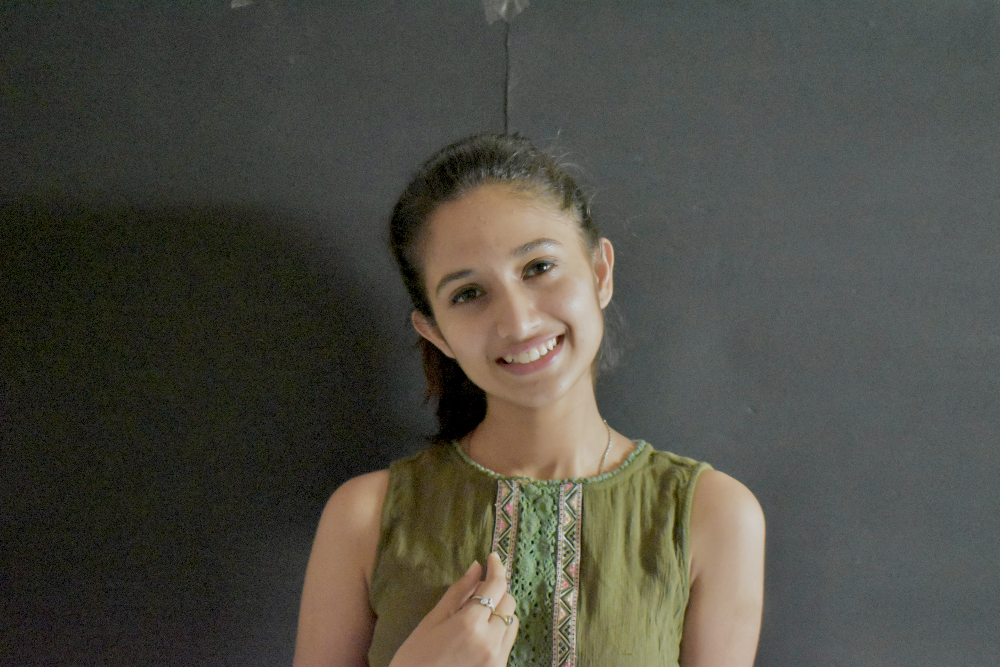

Computer Engineering MS Student Deep Learning Engineer
ABOUT ME
Hi! I'm Bhumika, a current MS student in Computer Engineering at New York University and a passinate Deep Learning enthusiast. With hands on experience in machine learning, deep learning , computer vision, image processing and a little bit of backend development I enjoy pushing the boundaries of innovation. My journey includes developing precision agriculture socultions in undergrad to working on generative AI and stable diffusion at NeuroPixel.AI Labs. Alongside my technical pursuits i'm deeply commited to community service and leardership, blending technical expertise with a purpose-driven approach to create meaningful impact.
The main objective of the project is to help the rural sector of India. Broadly consisted of 4 major facilities- an e-commerce website exclusively for the rural sector, a bidding site to get rid of middlemen exploitation, a Blogging site to make people aware of the rich culture in the villages, and an educational platform to increase employability. Also consists of Mannat which is a website to help nonprofit organizations across India. The project was mainly developed using the MERN Stack. - Participated and won 4th prize in the National Level Competition Shristi 2022 - Also got shortlisted for KCST 2022 computer science (BMSIT)
Developed a Machine Learning-based solution for precision agriculture. 9 different functionalities like soil fertility prediction, fertilizers recommendation, weed detection, yield prediction, etc. We explored and built over available algorithms like Random Forest Classifiers, Decision Trees, and CNN. - This project was later integrated with Swadeshi as a product and also won PBL -2022
Created a facial recognition model using Facenet as the base to automate the ticketing process in the metros.Used MTCNN for face and landmark detection and OpenCV for image processing. Also, the Aadhar integration authentication process to increase safety measures. - Published a patent for the project under the government of India. - Application no - 202141026348 A - Gained recognition from the government of Karnataka for the project.
July 2023- September 2024
I have successfully completed projects focused on skin segmentation, skin texture generation, and hair texture creation, showcasing my expertise in advanced image processing techniques. Additionally, I developed a cutting-edge super-resolution module based on SRGAN using PyTorch and designed an innovative stable diffusion workflow for model swap and identity preservation. As a primary author, I contributed to a published patent (202341060944), reflecting my commitment to groundbreaking research and innovation. Beyond technical development, I collaborated with the CTO on project management and led key engagements with industry giants such as Landmark Group, Decathlon, and Myntra, overseeing pilots and delivering impactful solutions tailored to their needs.
August 2022 - June 2023
I began my journey as the first software developer on the team, where I revamped CUDA programming and parallel processing workflows, significantly improving performance. I streamlined operations by developing Docker containers for all available repositories and contributed to database management while collaborating on a skin generation project. Additionally, I created a foundational cataloging platform for the company’s primary website using the MERN stack. My work included optimizing critical pre-processing tools such as OpenPose, DensePose, CIHP, and Labels to enhance efficiency. Within 11 months, I was promoted to Deep Learning Engineer and honored with the role of President of the POSH Committee, reflecting my dedication and leadership within the organization.
February 2022- July 2022
During my internship at Neuropixel.AI Labs, I developed web scraping scripts to curate datasets essential for training machine learning models. I also worked on preprocessing pipelines to ensure data quality and readiness. Additionally, I tackled image processing challenges using tools like OpenCV and PIL, sharpening my skills in creating efficient and reliable solutions for AI-driven projects.
October 2020 - December 2020
Worked on basic script orientation and development of a pipeline for a banking sector project.
# Linux # Google-colab #Jupyter #github # MySQL # Firebase.
#President Posh committee @NeuroPixel.AI Labs #Deputy Community service Director @RotaractClubBMS #General Secretary @YouthKarnataka
#Trained Hindustani Vocalist #Trained Bharatnatyam Dancer #Mandala Artist #Book person
1059 70th st
11228
Brooklyn, New York
bhumikadineshshetty@gmail.com
Phone:
+1 929 702 4696